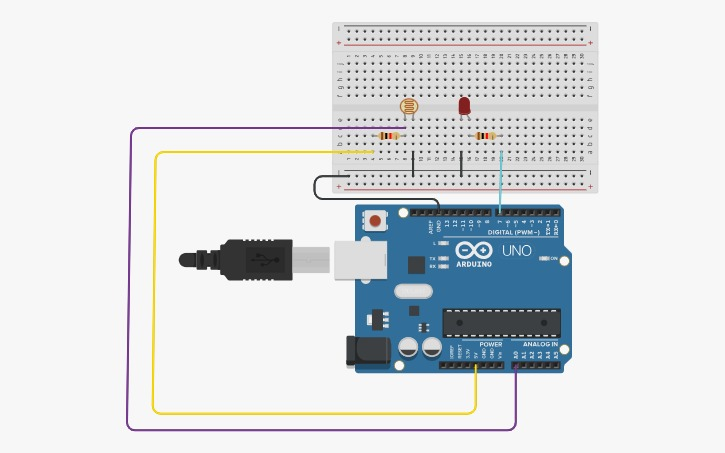

">
Project 8: Automatic Night Lamp
Arduino Uno R3 project
Project Summary
This project demonstrates Light detection, automatic control. Build it to learn practical aspects of light detection, automatic control.
Components Required
Key Components
Arduino Uno R3, LED, LDR, 10k Resistor, Jumper Wires, Breadboard
Circuit Diagram

Replace placeholder by adding project8-circuit.png to images/
Pin Connections
| Arduino Pin | Component Connection |
|---|---|
| LDR | A0 (voltage divider with 10k) |
| LED | Digital PWM pin 9 |
Step-by-Step Instructions
- Gather the components and assemble on a breadboard as shown in the circuit diagram.
- Double-check wiring and resistor connections; ensure correct polarity for LEDs.
- Open Arduino IDE, paste the sketch, select board/port, and upload.
- Use Serial Monitor for calibration if the sketch prints values.
Arduino Code
/* Project 8 - Light-sensitive LED / Night Lamp
* Hardware: Voltage divider using LDR and 10k resistor to A0. LED on pin 9.
* Purpose: Read analog sensor and make decisions based on threshold.
*/
const int ldrPin = A0;
const int ledPin = 9;
int threshold = 400; // tune this value depending on ambient light
void setup() {{ Serial.begin(9600); pinMode(ledPin, OUTPUT); }}
void loop() {{
int value = analogRead(ldrPin); // 0..1023 proportional to light
Serial.println(value); // useful for calibration
if (value < threshold) {{ // darker -> turn lamp on
analogWrite(ledPin, 200); // PWM brightness (0..255)
}} else {{
analogWrite(ledPin, 0); // turn off
}}
delay(200); // small delay for stability
}}
How It Works
Understanding the Code (line-by-line)
Explanation and justification: 1) analogRead returns 0-1023 — lets you measure light precisely. 2) Serial.println — important for calibration; observe values under different lighting and choose threshold. 3) analogWrite with PWM — allows dimming instead of simple on/off. 4) threshold tuning — different LDRs and setups require adjusting threshold; include a potentiometer to make it user-adjustable.
Digital / Analog I/O & Design Notes
Digital pins set with pinMode() drive outputs (HIGH/LOW). AnalogRead reads sensors (0-1023). PWM via analogWrite uses timers to simulate analog voltages.
Expected Output
The project will perform the described behavior (LEDs/buzzer/display) when wired and uploaded correctly. Use Serial Monitor for debugging and calibration.
What You Learned
- How to wire circuits and use a breadboard
- How to program Arduino digital and analog pins
- How to debug using Serial Monitor
Next Steps / Extension Ideas
Enhance with displays, non-blocking timing (millis()), wireless control, or state machines for more complex behaviour.